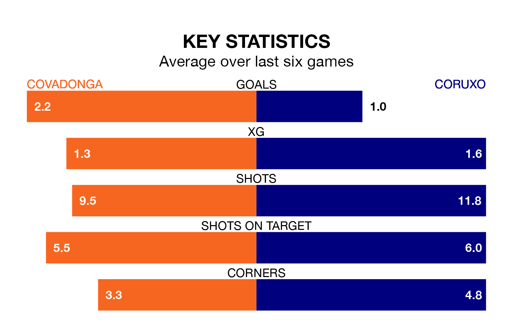

Coruxo visit Covadonga at the Estadio Juan Antonio A. Rabanal on Sunday on the back of three consecutive wins in the Segunda División RFEF Group 1.
Coruxo have picked up nine points from their last six games, and they face a Covadonga side who lost their last match, and have collected 10 points from the last possible 18.
Covadonga are 17th in the table after 28 games, of which they have won six and drawn eight, earning 26 points.
Coruxo are 10 places ahead of the home side in seventh, with 11 wins and five draws putting them on 38 points.
With 33 goals in 28 games so far this season, Covadonga are scoring at the league's average rate with 1.2 goals per game. And they are conceding more than average, letting in 49 goals at a rate of 1.8 per game.
The visitors, meanwhile, are below average scorers, with 1.1 goals per game. They have conceded 1.4 goals per game.
In the last three years, Covadonga and Coruxo have played each other on three occasions. Coruxo won all of them.
Their last meeting was on November 18, when Coruxo won 3-1 at home.
Covadonga's last match was on March 23, a 2-1 loss against CD Guijuelo, with Adrián Turmo getting the goal for Covadonga.
Coruxo beat Arandina CF 1-0 last time out, also on March 23, with David Añón González on the scoresheet.
Updated: 12:16 (UTC), 25/03/24